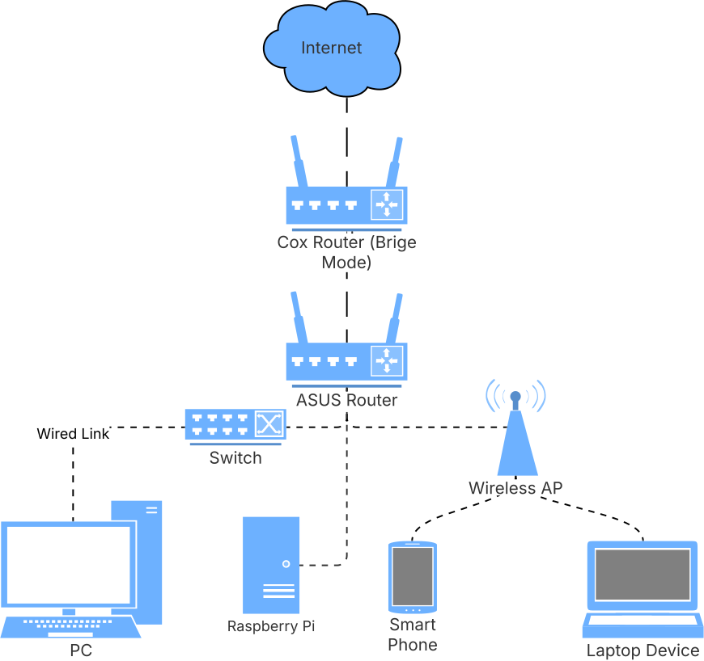

Zeek Home Network Monitoring
Zeek (formerly Bro) is a powerful passive network monitoring tool that generates detailed logs of network activity (HTTP, DNS, SSL, etc.) and configure rules for anomaly detection. If you are a network tinkerer like me, and want to monitor your own home network traffic, Zeek is a great tool to start with. In this blogpost, I'll walk through how I set up Zeek to monitor my home network using a Raspberry Pi and an ASUS router I had lying around.
Hardware Configuration
I use a Raspberry Pi 5 (8GB RAM) to run the Zeek server and any other tool to monitor my network traffic (e.g., pi-hole can be used as a DNS sinkhole). A cheap managed switch certainly that can do port mirroring (e.g., TP-link TL-SG108E) certainly helps, but in lieu of a managed switch, I use the Asuswrt-Merlin firmware on the ASUS router to forward traffic to the Raspberry Pi via iptables. Unlike raw ethernet frame mirroring managed switches may offer, this is Layer 3 mirroring isn't a packet-level full mirror, but works if the volume of traffic is not too high (ideal for a small home network). Overall, this approach requires:
- 1x Raspberry Pi 5 (8GB RAM)
- 1x ASUS RT-AC66U router (or any other router that supports flashing custom firmware)
- Some ethernet cables or extra switches/wireless APs if you cant to monitor the entire home network
Network Connections
- Place your original router in bridge mode (this prevents a double NAT situation and allows the ASUS router to control NAT).
- Connect the ASUS router to your modem (in bridge mode) and the Raspberry Pi to the ASUS router via ethernet.
- Connect any extra switches or Wireless APs to the ASUS router.
- Debug your network connections using tools like nmap (e.g.,
nmap -sP 192.168.50.0/24to see if the Raspberry Pi is reachable).
ASUS Router Configuration
- - Install the Asuswrt-Merlin firmware on the ASUS router (Adminstration → Firmware Upgrade → Upload firmware file). I used Asuswrt-Merlin downloads to find the correct firmware (RT-AC68U for my router). Alternatively, I believe you can also use OpenWrt or DD-WRT if you prefer.
- Enable SSH connections to the ASUS router (found in Administration → System).
- Setup iptables rules to forward traffic to the Raspberry Pi IP address (192.168.50.X). Reboot the router to apply the changes.
>> vi /jffs/scripts/firewall-start #!/bin/sh iptables -t mangle -A PREROUTING -i br0 -j TEE --gateway 192.168.50.X iptables -t mangle -A POSTROUTING -o br0 -j TEE --gateway 192.168.50.X >> chmod +x /jffs/scripts/firewall-start - Verify that the traffic is being forwarded to the Raspberry Pi by running
the following command. You should immediately see the traffic that isn't addressed to the
raspberry pi being forwarded to it.
sudo ip link set eth0 promisc on sudo tcpdump -i eth0 -n
Zeek Configuration
Follow the Zeek installation instructions to install Zeek for your Raspberry Pi (I used the Debian version for arm64). After installation, I edited the following configuration files:
# /opt/zeek/etc/networks.cfg # Address ~ Label for the network
192.168.0.0/16 Home network
# /opt/zeek/etc/node.cfg [zeek] type=standalone host=localhost
interface=eth0
# /opt/zeek/etc/zeekctl.cfg
# Optional: Configure email notifications for alerts and increasing the log rotation interval.
MailTo="email@domain.com"
LogRotationInterval = 7200Grafana Dashboard
To visualize the network traffic, I use Grafana installed on the Raspberry
Pi. Firstly,
follow this guide to install Grafana on a Raspberry Pi. Next, you would want to bootstrap a simple way to
trasnfer the zeek logs to a database (SQLite) which Grafan can query. I
provid a vibe-coded script in this
repo that converts Zeek logs to a SQLite database for easier querying.
You would want to place this script into a cron job to run periodically (and I write the default output into /var/lib/grafana/data/zeek_logs.db). Lastly, Grafana offers some pre-built dashboards for Zeek (e.g., pcap-did-what), which I customized to track the metrics I care about most. You can use the graphana-queries.sql file to get started.

Event Notifications
There are a lot of things one can do with this setup now. Yacin Nadji (who also uses Zeek for home network monitoring!) has a blogpost on adding Telegram notifications to Zeek. The full blogpost is available at: Telegram Zeek: You're My Main Notice, and also includes how you can trigger custom actions when certain events occur.
What's Next?
At this point, I'm still chasing down packets and trying to understand what's going on. For example, Apple's ecosystem heavily relies on DNS-based traffic for device discovery within network. Same goes for Spotify (maybe it's their cast feature?). Shockingly, my Unifi switch seems to call home to ui.com quite a lot! Send me a note if you think there's a research angle here!
References
- Zeek Installation Guide - Official Zeek documentation
- Asuswrt-Merlin Downloads - Custom firmware for ASUS routers
- TP-link TL-SG108E - Managed switch with port mirroring
- zeek-to-sqlite.py - Script to convert Zeek logs to SQLite
- pcap-did-what - Grafana dashboard for Zeek
- graphana-queries.sql - Custom Grafana queries for Zeek
- Telegram Zeek: You're My Main Notice - Blogpost on adding Telegram notifications to Zeek